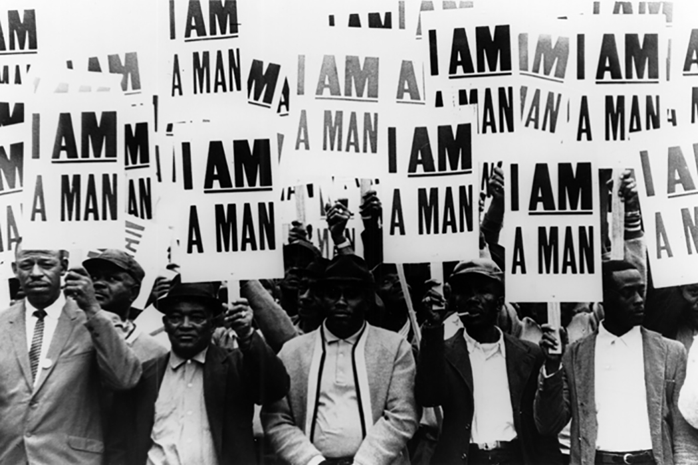
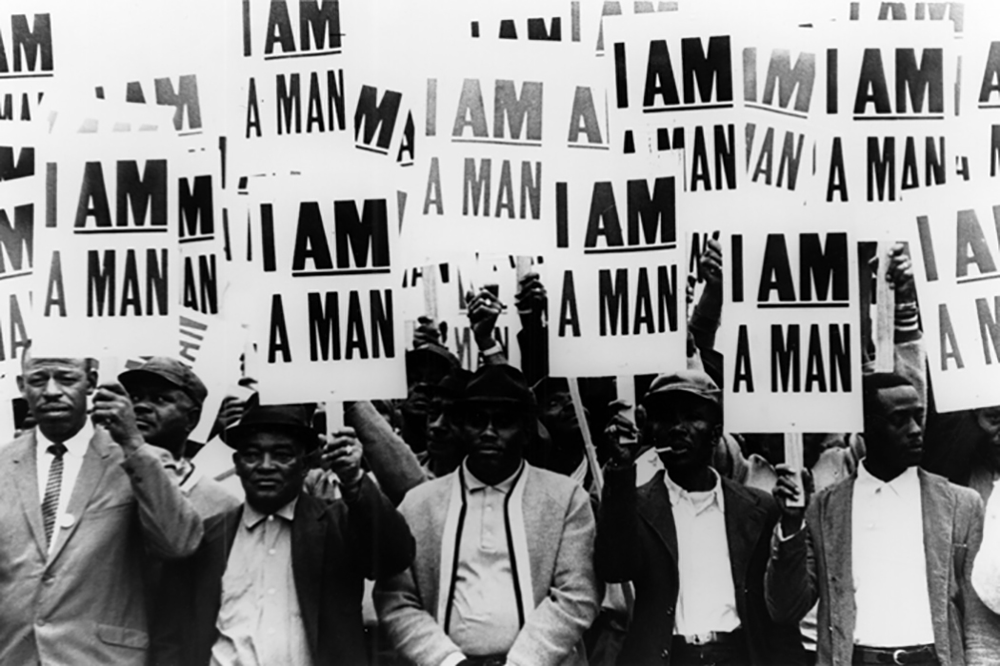
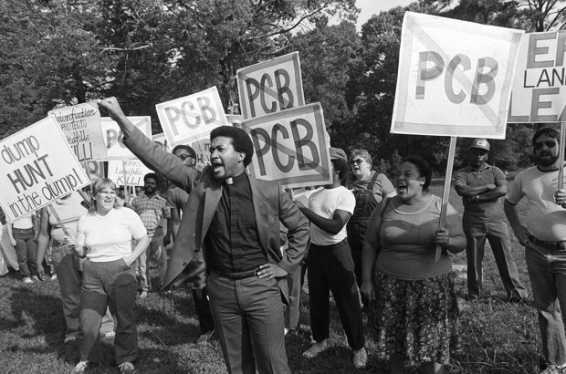
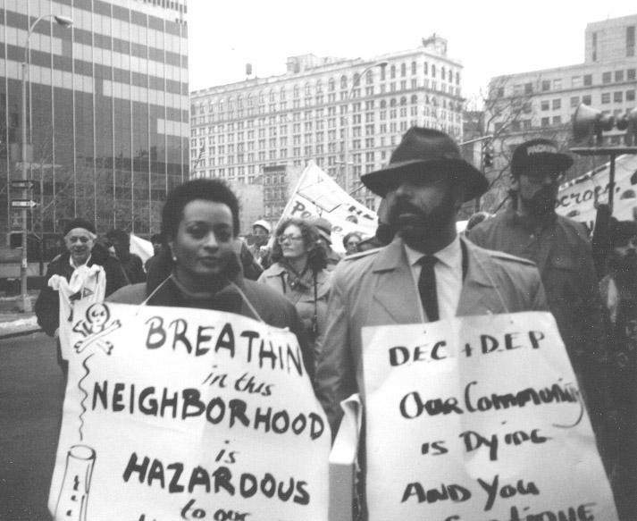
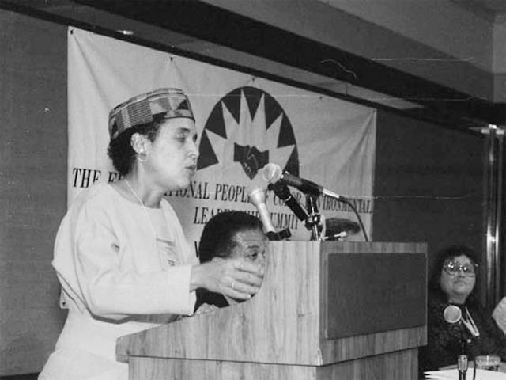

1968
Memphis Sanitation Strike
The first time Black people mobilized on a national scale to oppose environmental injustice.
Martin Luther King Jr. advocated for better practices regarding Memphis, Tennessee, garbage disposal.
The first time Black people mobilized on a national scale to oppose environmental injustice.
Martin Luther King Jr. advocated for better practices regarding Memphis, Tennessee, garbage disposal.
The second time Black people mobilized on a national scale to oppose environmental injustice.
Over 500 activists were arrested while protesting the construction of a polychlorinated biphenal landfill. Widely understood to be the catalyst for the environmental justice movement.
The United States General Accounting Office conducted a study that provided empirical support for environmental racism.
The study found that hazardous waste landfills were more likely to be located in Black and poor communities.
The United Church of Christ Commission on Racial Justice expanded on the previous study and found that across the U.S., race was the most significant factor in the location of hazardous waste sites.
WE ACT is one of the first environmental justice organizations created by and for people of color, designed to empower people of color to have a say in environmental decisions in their communities.
IEN was formed by indigenous peoples to build the capacity of indigenous communities and tribal governments to develop mechanisms to protect their sacred sites, natural resources, and the health of their people and of all living things.
The Congressional Black Caucus met with Environmental Protection Agency officials to discuss their findings that environmental risk was higher for minority and low-income populations, and to push the EPA to conduct inspections that addressed their communities' needs.
The working group addresses the issue that people of color and low-income populations bear a higher environmental risk burden than the general population.
Several hundred people of color attended a conference on environmental leadership and adopted a comprehensive platform of 17 Principles of Environmental Justice.
